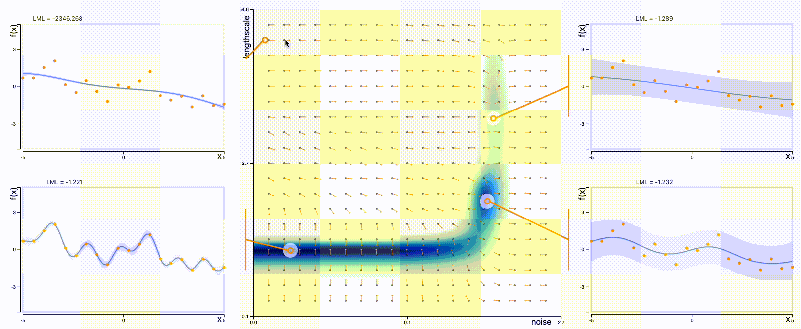
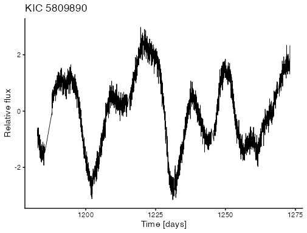
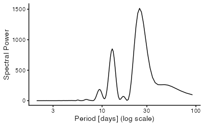
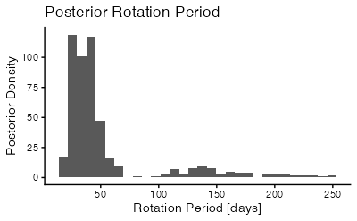
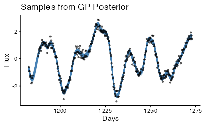
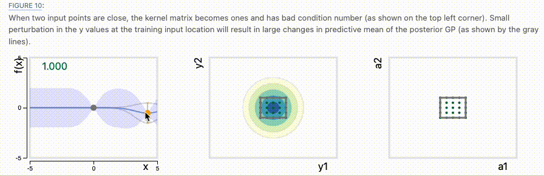

Ignoring entry 'angus2017' (line100) because:
A bibentry of bibtype 'Article' has to specify the field: c("journaltitle", "journal")6. Using Nonlinear Models
- Hyperparameter tuning
- Application to case study
- Posterior predictives
- Interpretability evaluation
Learning outcomes
- Describe the theoretical foundation of intrinsically interpretable models like sparse regression, gaussian processes, and classification and regression trees, and apply them to realistic case studies with appropriate validation checks.
Reading
Görtler, J., Kehlbeck, R., & Deussen, O. (2019). A visual exploration of Gaussian processes. Distill, 4(4). doi:10.23915/distill.00017
Deisenroth, M., Luo, Y., & van der Wilk, M. (2020). A practical guide to Gaussian processes. https://infallible-thompson-49de36.netlify.app/.
Hyperparameter Optimization
Marginal Likelihood
Q: How do we choose hyperparameters \(\theta = \left(\ell, \sigma_f, \dots, \right)\)
A: Find \(\theta\) that makes the observed data \(\mathbf{y}\) most probably:
Marginal likelihood
\[p(\mathbf{y} | \mathbf{X}, \theta) = \int p(\mathbf{y} | \mathbf{f}, \mathbf{X}) p(\mathbf{f} | \mathbf{X}, \theta) d\mathbf{f}\]
This “marginalizes” over all possible functions \(\mathbf{f}\).
Marginal Likelihood
For the GP model, this has a closed form:
\[\log p(\mathbf{y} | \mathbf{X}, \theta) = -\frac{1}{2}\mathbf{y}^\top(\mathbf{K} + \sigma_n^2\mathbf{I})^{-1}\mathbf{y} - \frac{1}{2}\log|\mathbf{K} + \sigma_n^2\mathbf{I}| + \text{const}\]
This has two competing terms – data fit vs. model complexity.
Automatic Occam’s Razor
Consider fitting a sine wave with noise. How would you choose the RBF \(\ell\)?
Very small \(\ell\) (underfitting)
- Will interpolate the noise, not just the cuve
- Spreads probability over too many datasets
- Low marginal likelihood
Very large \(\ell\) (overfitting)
- Will oversmooth the sine component
- Low marginal likelihood
The right choice of \(\ell\) will be flexible enough to fit the sine curve but not the noise. The marginal likelihood finds this automatically without any cross-validation.
Marginal Likelihood Surface

- Non-convex: multiple local optima
- Each optimum corresponds to different explanation of data
- Gradient-based optimization sensitive to initialization
Initializing Signal Variance
Observation = Signal + Noise
\[\begin{align*} y = f(x) + \epsilon \end{align*}\]
Variance Decomposition
\[\begin{align*} \underbrace{\operatorname{Var}[y]}_{\text {what we see }}=\underbrace{\sigma_f^2}_{\text {signal }}+\underbrace{\sigma_n^2}_{\text {noise }} \end{align*}\]
Initializing Signal Variance
Heuristic 1: If the instrument’s precision is known (e.g., Kepler telescope noise \(\sigma_n \approx 10^-4\)), then set \[\begin{align*} \sigma_f^2=\operatorname{Var}[y]-\sigma_n^2 \end{align*}\]
Heuristic 2: Suppose the signal dominates by some assumed SNR factor \(\kappa\) (e.g., 2 - 100). Then set \[\begin{align*} \sigma_{f}^{2} \approx \operatorname{Var}[y]\\ \sigma_{n}^{2} \approx \frac{\sigma_f^2}{\kappa^2} \end{align*}\]
Initializing Lengthscale
Lengthscale controls how far we travel before \(f(x)\) and \(f(x')\) decorrelate
Heuristic: Set lengthscale relative to spread of input data \[\ell \approx \lambda \cdot \text{SD}[\mathbf{X}], \quad \lambda \in [0.2, 10]\]
Alternative: Use median distance from mean \[\ell \approx \text{median}\{|x_i - \bar{x}|\}\]
Case Study: Steller Variability
Data Characteristics
> dim(data)
[1] 3822 3
Periodogram
spec <- spectrum(data$flux, pad = 6, plot = FALSE)
There seem to be two periodicities that dominate.
Rotation Kernel for Stellar Variability
\[k_{\text{rot}} = k_{\text{periodic}} \times k_{\text{decay}}\]
Physical interpretation:
- Periodic component: rotation
- Decay component: timescale for spot changes
- Product: spots appear/disappear as star rotates
The original source (, ) used a slightly more involved periodoc kernel. It used a similar domain-informed kernel construction though.
Kernel Specification
This is how we can implement the kernel in R.
k_periodic <- periodic(period = exp(logperiod),
lengthscale = 1,
variance = exp(logamp))
k_decay <- mat52(lengthscale = exp(logdecay),
variance = 1)
full_kernel <- k_periodic * k_decay + white(exp(logs2))Hyperparameters
logperiod: \(\log p\) (rotation period)logdecay: \(\log \ell_{\text{decay}}\) (spot lifetime)logamp: \(\log \sigma_f^2\) (signal variance)logs2: \(\log \sigma_n^2\) (noise variance)
Prior Specification
mean_flux <- normal(0, 1)
logs2 <- normal(-1, 2)
logamp <- normal(log(var(data$flux)), 2)
logperiod <- normal(log(25), 2)
logdecay <- normal(log(25 * 3), 2)Rationale
logperiod ~ N(log(25), 2): Centered at periodogram guess, but widelogdecay ~ N(log(75), 2): Lasts ~3 rotation periodslogamp ~ N(log(Var[y]), 2): Signal variance ~ data variancelogs2 ~ N(-1, 2): Relatively small noise
Maximum A Posteriori (MAP) Estimate
gp_model <- gp(data$time, full_kernel)
distribution(data$flux) <- normal(gp_model + mean_flux,
data$flux_err)
m <- model(logperiod, logdecay, logamp, logs2, mean_flux)
map_soln <- opt(m, initial_values = start_vals)This helps us find a mode of the posterior as starting point for MCMC.
Posterior Distribution: Rotation Period
period_samples <- exp(draws[, "logperiod"])
Posterior Predictive Samples
Each draw here is a plausible function \(f(t)\) consistent with data and kernel
time_grid <- seq(min(data$time), max(data$time), length.out = 1000)
gp_array <- project(gp_model, time_grid)
gp_samples <- calculate(gp_array, values = draws)[[1]]project evaluates the GP posterior distribution at the specified time_grid.
Posterior Predictive Visualization
Observations
- Periodic structure well-captured
- Uncertainty narrow near data (compare with later excercise)

Case Study Takeaways
The kernel is a hypothesis about the data generating process.
- Quasiperiodicity -> rotating star with evolving spots
- Not an arbitrary computational choice
What we learned
- Rotation period
- Spot evolution
- Subtract fitted stellar variability -> potential exoplanet detection
The GP is not just fitting curves, it’s extracting astrophysics.
Numerical Stability
Condition Number
Problem: Computing \(\left(\mathbf{K} + \sigma_n^2 I\right)^{-1}\) on a computer.
The condition number measures is the ratio of the largest and smallest eigenvalues of this matrix:
\[\kappa = \frac{\lambda_{\max}}{\lambda_{\min}}\]
Problem: Large \(\kappa\) → numerical instability in matrix inversion
Sources of Ill-Conditioning
For GPs, we can bound \(\kappa \leq N\alpha^2 + 1\) where \(\alpha = \frac{\sigma_f}{\sigma_n}\).
Paradoxically, high-quality data and larger sample sizes create numerical problems!
Sources of Ill-Conditioning
When does \(\left(K + \sigma_n^2\right)\) become nearly singular?
Scenario 1: Nearly identical rows
- Happens when \(x_i \approx x_j\) (points too close).
- Also when \(\ell \gg\) data range (everythign correlated).
Scenarios 2: Noise-free limit
- When \(\sigma_{n} \downarrow 0\), we are asking for interpolation
- The term \(\sigma_{n}^{2}\) regularizes
Sources of Ill-Conditioning

Jitter Heuristic
Heuristic. Add small “jitter” to the diagonal
\[\begin{align*} \mathbf{K} + \sigma_n^2\mathbf{I} \to \mathbf{K} + (\sigma_n^2 + \epsilon^2)\mathbf{I} \end{align*}\]
- Increases \(\lambda_{\text{min}}\)
- Caps maximum achievable SNR at \(\frac{\sigma_f}{\epsilon}\)
- Prevents numerical catastrophe.
Typically \(\epsilon ~ 10^{-6} - 10^{-4}\).
Data Normalization
Input standardization \[\tilde{x} = \frac{x - \bar{x}}{\text{SD}[x]}\]
Also have to rescale \(\ell \to \ell / \text{SD}[x]\)
Output centering \[\tilde{y} = y - \bar{y}\]
- Moves data away from “meaningful zeros”
- Makes default priors (e.g., \(m = 0\)) more appropriate
Kepler Analysis
We used this in the stellar variability study.
- Remove median flux (centering)
- Convert to parts per thousand (scaling)
- Thin data by factor of 10 (reduce \(N\))
See 03-prep.ipynb.
Interpretability
Interpretability Criteria
- Predictive accuracy: Can we approximate complex functions?
- Parameter meaning: Do parameters correspond to scientific quantities?
- Uncertainty: Does model know what it doesn’t know?
- Visualization: Can you draw what the model believes?
- Falsifiability: Can you identify when the model is wrong?
GPs do well on all five… deep learning fails 2 - 5.
Comparison with Linear Regression
Linear regression
- Parametric: \(y = \beta_0 + x^\top \beta\).
- Interpretable: “\(\beta_{1}\) is the effect of \(x_{1}\) all else held equal”
- Global: same \(\beta\) everywhere
- Limited: cannot capture nonlinearity without feature engineering
Gaussian processes
- Nonparametric: no fixed functional form
- Interpretable Hyperparameters: \(\ell\) (scale), \(p\) (period), …
- Local: predictions weighted by kernel
- Flexible: captures complex patterns
Nonparametric but Interpretable
- Nonparametric -> complexity grows as the number of samples increases
- Not “effect sizes” but “characteristic scales”
- “How quickly does \(f\) vary?” not “How much does \(x\) affect \(y\)?”
Both GPs and linear regression are interpertable, but in different senses.
Limitations and Extensions
Limitations:
- 1D time series only
- Observed data are Gaussian
- Stationary/periodic assumptions
Extensions:
- Non-Gaussian observations: Maybe we want a Student-t likelihood for robustness or softmax layer for classification.
- Multidimensional inputs or outputs: We might have other relvant measurements for each star, and may want to model several stars at once.
Exercise
[GP Missing Data] Rerun the case study notebook with a window of observations missing. How does it affect the posterior on the period? What do the posterior predictive samples look like?
data_model <- data |>
arrange(time) |>
filter(time < 1210 | time > 1220) |>
dplyr::slice(seq(1, n(), by = 10))